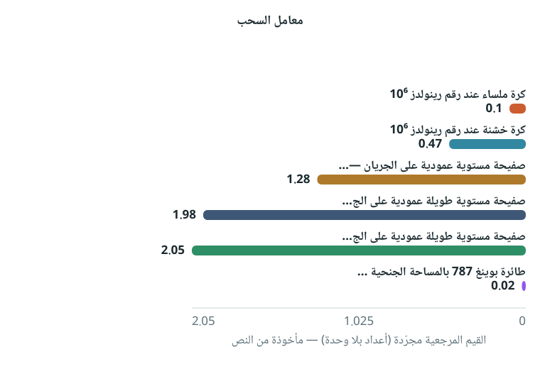

معامل السحب
Drag Coefficient
عدد لابعدي يجمع مقاومة الشكل والاحتكاك في قوة سحب واحدة، وقيمته مشروطة بمساحة مرجعية وبرقم رينولدز.
معامل السحب عدد لابعدي يُعرَّف بـc_d = 2F_d/(ρu²A)، حيث F_d مركّبة القوة في اتجاه سرعة الجريان، وρ كثافة المائع، وu السرعة النسبية بين الجسم والمائع، وA المساحة المرجعية. والمساحة المرجعية ليست واحدة لكل الأجسام: المساحة الأمامية المسقطة للسيارات، ومساحة الجنح الاسمية للجنيحات، ومربع الجذر التكعيبي للحجم للمناطيد وأجسام الدوران، والمساحة المبلّلة للأجسام الانسيابية المغمورة. ولذلك لا تُقارن معاملات سحب مأخوذة بمساحات مرجعية مختلفة، ولا تُقارن بلا معرفة رقم رينولدز الذي قُيست عنده. والمعامل يجمع مساهمين: سحب الاحتكاك الجلدي الناتج عن إجهادات القص، وسحب الضغط (الشكل) الناتج عن الضغط على السطح. وللجنيحة الرافعة يُضاف سحب مستحثّ بالرفع، وللمنشأ الكامل كالطائرة سحب تداخل بين أجزائه. ويُعبَّر عن المعامل مجموعًا: c_d = c_p + c_f، بسحب الضغط c_p وسحب الاحتكاك c_f. والجسم الانسيابي يبقي طبقة حدّه ملتصقة أطول وقت فيكون أسيله ضيّقًا وسحب ضغطه صغيرًا، والجسم الحادّ (brick أو أسطوانة) تنفصل طبقة حدّه فيتكوّن أسيل عريض ويهيمن سحب الضغط. ولهذا تفصل المعاملات إلى فئتين: ما دون 1 للأجسام الانسيابية، وما يقارب 1 وأكثر لغير الانسيابية.
كيف تعمل الظاهرة؟
القوة بين مائع وجسم تنتقل بضغطين فقط: ضغط عمودي على السطح وإجهاد قصّ مماسّ له. فتتكوّن مقاومة الجسم من مركّبتين: تكامل الضغط في اتجاه الجريان (سحب الشكل) وتكامل القص (سحب الاحتكاك). ويحكم نسبة المركّبتين موقع انفصال الطبقة الحدّية: كلما تأخّر الانفصال ضاق الأسيل وقلّ سحب الضغط. ورقم رينولدز يحكم انتقال الطبقة من الصفائحية إلى المضطربة، ورقم ماخ يحكم ظهور موجات الصدمة وسحب الموجة.
العلاقة بالأرقام
الصيغة c_d = 2F_d/(ρu²A) مكافئة للشكل الشائع F_d = ½ρu²c_dA. وأمثلة المصدر: صفيحة صفائحية موازية للجريان 0.001 عند Re<10⁶، ومضطربة موازية 0.005 عند Re>10⁶، وكرة ملساء 0.1 وكرة خشنة 0.47 عند 10⁶، وصفيحة عمودية 1.28 ثلاثية الأبعاد و1.98–2.05 ثنائية، وبرج إيفل 1.8–2.0، ومبنى إمباير ستيت 1.3–1.5. وللطائرات: 0.024 لبوينغ 787 و0.0265 لإيرباص A380 و0.027 لسيسنا 172 و0.031 لبوينغ 747 بالمساحة الجنحية.
مفاهيم متقاربة
الرقم لا معنى له بلا شرطين معه: المساحة المرجعية ورقم رينولدز. ومقارنة سيارة بجنيحة بلا تصريح المساحة مقارنة باطلة، لأن مساحة الجنح أكبر بكثير فتُنتج معاملات أصغر لقوة سحب مماثلة.
حدود التطبيق
الأول: c_d ليست ثابتًا؛ تتغيّر مع رقم رينولدز ورقم ماخ، وقد تنخفض انخفاضًا مفاجئًا في «أزمة السحب» حول Re ≈ 3×10⁵ للكرة. الثاني: لطائرات ما فوق الصوتية لا يكفي المعامل وحده لوصف الموجة. الثالث: للجسيمات الصغيرة يخرج النموذج الرباعي عن الصلاحية: في نظام ستوكس F_d ∝ v لا v². الرابع: قيم الجداول مؤشرات تصميمية عند شروط مذكورة، لا قيمًا دقيقة لكل حالة؛ والاعتماد عليها في حساب إنشائي حساس يلزمه قياس أو محاكاة.

| الكمية | القيمة | المصدر |
|---|---|---|
| كرة ملساء عند رقم رينولدز 10⁶ | 0.1 — | [1] |
| كرة خشنة عند رقم رينولدز 10⁶ | 0.47 — | [1] |
| صفيحة مستوية عمودية على الجريان — ثلاثية الأبعاد | 1.28 — | [1] |
| صفيحة مستوية طويلة عمودية على الجريان — ثنائية الأبعاد | 1.98–2.05 — | [1] |
| طائرة بوينغ 787 بالمساحة الجنحية المرجعية | 0.024 — | [1] |
المصادر
- 1 Drag coefficient — Wikipedia. en.wikipedia.org/wiki/Drag_coefficient · اطُّلع عليه 2026-11-28
- 2 Shape Effects on Drag — NASA Glenn Research Center. www.grc.nasa.gov/www/k-12/airplane/shaped.html · اطُّلع عليه 2026-11-28
استشهد بهذا المصطلح
الصيغتان مبنيتان من بيانات الصفحة نفسها: العنوان والتاريخ ورابط النسخة المنشورة.
معامل السحب — Drag Coefficient. (2026). ديوان المعرفة — انفراد. https://infiradev.com/diwan/terms/term-drag-coefficient.html
@misc{term-drag-coefficient2026,
title = {معامل السحب},
titleaddon = {Drag Coefficient},
howpublished = {{ديوان المعرفة — انفراد} — مرجع علمي عربي},
year = {2026},
url = {https://infiradev.com/diwan/terms/term-drag-coefficient.html},
urldate = {2026-11-28},
note = {مراجعة علمية: Abdullah Al-Huwaidi}
}
راجعه: Abdullah Al-Huwaidi · 2026-11-28 · آخر تحديث 2026-11-28